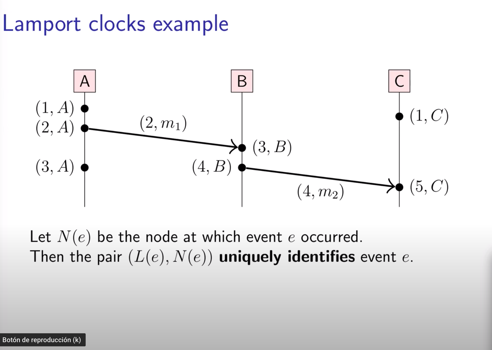
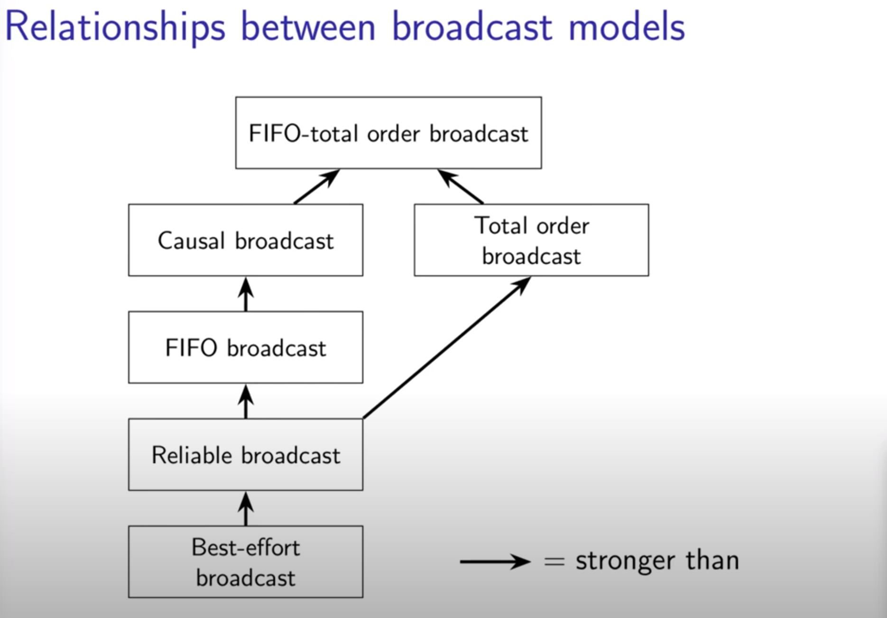

Course on Distributed Systems by Martin KleppmannBooksPart 1Why make a Distributed System?Distributed Systems and Computer NetworkingRPC (Remote Procedure Call)Part 2System Models of Distributed systemsSystem ModelsNetworksNode behaviourSynchronyFault toleranceFailure detectorsPart 3: Times, clocksClock synchronizationNTPOrdering of messagesPart 4: Broadcast protocols and logical timeLogical clocksLamport clocks algorithmVector clocksAssumptions:Vectors clocks algorithmVectors clocks ordering:Broadcast orderingBroadcast protocolsForms of reliable broadcast:Causal broadcastTotal order broadcast
Disadventages:
We use an oversimplication of a distributed system:
xxxxxxxxxxnode i -------------message-------------> node j
Two important aspect of distributed systems:
a) Latency: time untile message arrrives b) Bandwith: data volume per unit time
Its another way of commmunicate nodes. It makes a call to a remote function It looks the same as a local function call. This obeys to the principle "Location Transparency"
However the philosophy is not quite accurate because as we have said network is unreliable. CORBA was an example of this.
2017: Google RPC introduced a new RPC framework called GRPC
Examples:
xxxxxxxxxxarmy1 and army2 want to attack a city1
The two armies communicated between each other via messengers Those messenger are exposed to certain risk: so the message could be lost
| Army 1 | Army 2 | Outcome |
|---|---|---|
| does not attack | Does not attack | nothing happens |
| attacks | does not attack | army2 defeated |
| does not attack | attacks | army2 defeated |
| attacks | attacks | city captured |
Desired: army1 attackas if and only if army2 attacks
general1 sends the messenger, the message is received by general2 but then messenger does not give a response to general 1
Situation 2:
general1 sends the messenger, the message is lost
There is not common knowledge: The only way of knowing something is to communicate it
Problem: some of the generals might be traitors But with a difference: messengers mechanism never fail
xxxxxxxxxx+-----------++-----------| army3 |------------+| +-----------+ || | |messenger attack? messenger| | || +-----|-----+ || | | || +------- city | ------+ || | | | | || attack? +-----------+ attack? || | | || | | ||---------+ +------|----|| army1 |<-----mess----> army2 |+---------+ +-----------+
Conditions:
Theorem: need 3f + 1 generals in total to tolerate malicious generals (i.e. < 1/3 may be malicious)
Cryptography (digital signatures) helps - but problem remains hard
xxxxxxxxxx+-----------++-----------| customer |--------------+| +-----------+ || | |RPC agree? RPC|| | || +-----|-----+ || | | || +------- order | ------+ || | | | | || agree? +-----------+ agree? || | | || | | ||---------+ +------|------|| online |<-----mess----> payments || shop | | service |+---------+ +-------------+
How they all agree in the status of an order?
"Byzantine" has long been used for excessively complicated, bureazcratic, devious. "The Byzantine tax law"
In real systems, both nodes and networks may be faulty. Capture assumptions in a system model consisting of:
1- Network behaviour (message loss) 2- Node behaviour (crashes) 3- Timing behaviour (latency)
Choice of model for each of these parts
But we can take some scenerarion
a) Reliable (perfect) links b) Fair-loss links: Messages may be lost, duplicated or reordered c) Arbitrary links (active adversary): A malicious adversary
We can go from Arbitraty to Fair-Loss with TLS and from Fair-Loss to Reliable with retry + dedup
Crash-Stop: A node is faulty if it crahes (at any moment). After crashing
it stops executing forever
Crash-Recovery: A node may crash at any moment, losing its in-memory state.
It may resume executing sometime later
For each of three parts of system modeling, pick one:
We want availability to 99.999% per year which means only 5.3 minutes/year
SLO(Service Level Objective): 99,9% of users get response in 200ms SLA(Service Level Agreement): contract specifying some SLO, penalties for violation
Failure detectors: algorithm that detects wheter another node is faulty Perfect failure detector: labels a node as faulty if and only if it has crashed
Problem: cannot tell the difference between crashed node, temporarily unresponsive node, lost messagem and delayed message
Eventually perfect failure Detector
We distinguisg between:
Computer clocks are made of quartz: which frequency sometimes is affected for high temperatures for example. The clock error is measured in ppm
If quartz is not precise then maybe you want to use an atomic clocks. They are used for satellites
We take atomical time and we make corretions depending on astronomical obsrvations and we define then UTC.
How computers represent timestamps:
Unix time is the number of seconds since 1 January of 1970, not counting leap seconds. Most software ignores leap seconds.
Some solution is to smear the leap second during the course of a day
Because computers use quartz clocks, they could drift, which give us: clock skew: difference between two clocks at a given point.
How do we deal with this?
With a protocol called NTP or a protocol called PTP
Stratum 0: atomic clock or GPS receiver Stratum 1: synced directly with stratum 0 device Stratum 2: servers that sync with with stratum 1, etc
The protocol reduces clock skew to few milliseconds in good network conditions, but can be much worse!
xxxxxxxxxxNTP Client ------------T1------------------------>T2 NTP ServerNTP Client T4<-----------(T1,T2,T3)---------------T3 NTP Server
Roundtrip network delay: d = complete time(T4 - T1) - processing time(T3 - T2)
Estimated server time when client receives response: t3 + d/2
Estimated clock skew: t3 + d/2 -t4 = (t2-t1 + t3-t4) / 2
System.nanoTime() --> Time since arbitrary tume Monotonic clock (when the machine booted up). Good for meaurements
System.currentTimeMillis() --> Time since 1 January 1970
we need to define mathematically:
a happens before b (a -> b) iff:
An event is something happening at one node (sending or receiving a message, or a local execution step)
we have the concept of causality
a -> b, then a might have caused b a || b, we know that a cannot have caused b
This encodes potential causality
Why physical time is if there is a message m1 with t1 and a message m2 with t2 it could be that t2 < t1.
Because of this we use logical clocks that captures the causality.
Physical Clock: count number of seconds elapsed Logical Clock: count number of events occured. They are designed to capture causality. (e1 -> e2) => T(e1) < T(e2)
They capture the property (e1 -> e2) => T(e1) < T(e2)
xxxxxxxxxx__on__ initialisation __do__t :=0 _each node has its own local variable t___end on____on__ any event occuring at the local node __do__t := t + 1__end on____on__ request to send message _m_ __do__t := t + 1; send (t, m) via the underlying network link__end on____on__ receiving (t', m) via the underlying network link __do__t := max(t', t) + 1deliver m to the application__end on___Properties of Lamport clocks_
Assumptions:
Properties:
N(e) is the name of the node which helps to uniquely identify an event

We can defina a total order:
(a << b) <=> (L(a) < L(b)) or (L(a) = L(b) and N(a) < N(m))
The order is causal:
(a -> b) => (a <<b )
This is different to what we have previously, in which case events that happen cocurrently
a || b it was impossible to know which one happens first. We the new pair (L(node), N(node)) we
can eaily have a total order
Lamport clocks have limitations. Given L(a) and L(b) with L(a) < L(b) we can not tell wheter a->b or
a||b.
T < T' iff T <= T' and T != T' (strict inequality)
T || T' iff T!<=T' and T' !<= T (they are incomparable)
V(a) <= V(b) iff ({a} U {e | e -> a}) contained in ({b} U {e | e -> b})
Properties of this partial order:
(V(a) < V(b)) <=> (a -> b)
(This is a biderectional relationship, different on what happens with Lamport clocks)
(V(a) = V(b)) <=> (a = b)
(V(a) || V(b)) <=> (a || b)
Broadcast (multicast) is group communication:
If we want causal order we must use
